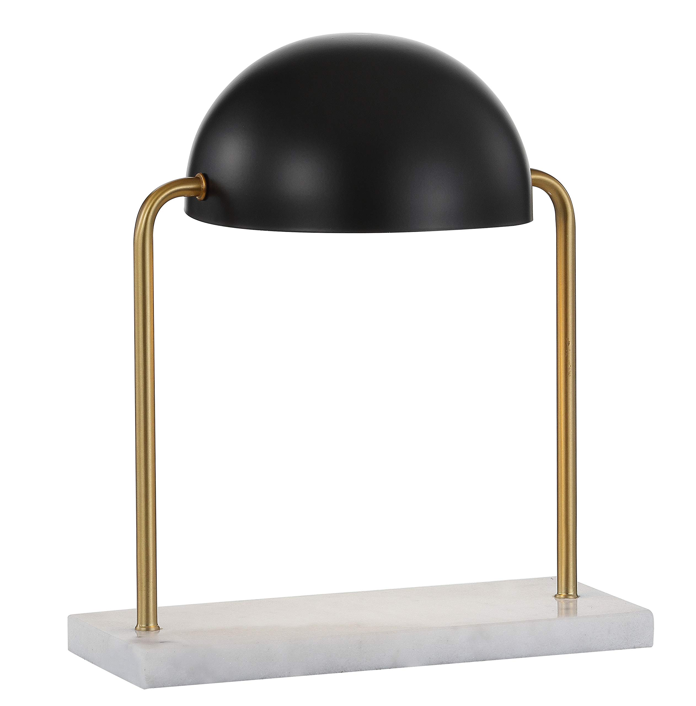

JONATHAN Y Porter Brass Dome Lamp: Deco Glamour for the Side Table

A dome lamp brings Deco glamour to a plain side table. Black metal, brass arms, a marble base. Thirteen inches tall, made for small corners.
As an Amazon Associate I earn from qualifying purchases.
What it is
- Shade: a matte black metal dome, smooth and geometric, the Deco shape of the lamp.
- Frame: brass gold metal arms that curve down to the base.
- Base: a white marble rectangle, heavy enough to hold the lamp steady.
- Bulb: a 4W LED bulb is included, E26 socket, with an in-line switch.
- Size: 13.5 inches high, 12 inches wide, 8 inches deep. UL listed.
Neo Deco is the look of the year, and brass is its metal. A brass lamp is the cheapest way into the style, and the dome keeps it geometric instead of fussy.
Who it suits
- The Neo Deco fan. Brass, black and marble are the palette, and this lamp has all three.
- The small side table. Thirteen inches tall, so it fits where a tall lamp would crowd.
- The bedside reader. A dome throws the light down, right where the book is.
How to style it: put it on the side table next to the chair you actually sit in. A stack of books beside it, and the corner is done.
As an Amazon Associate I earn from qualifying purchases.
Complete the look
One lamp starts the corner. These are the pieces that go with it.